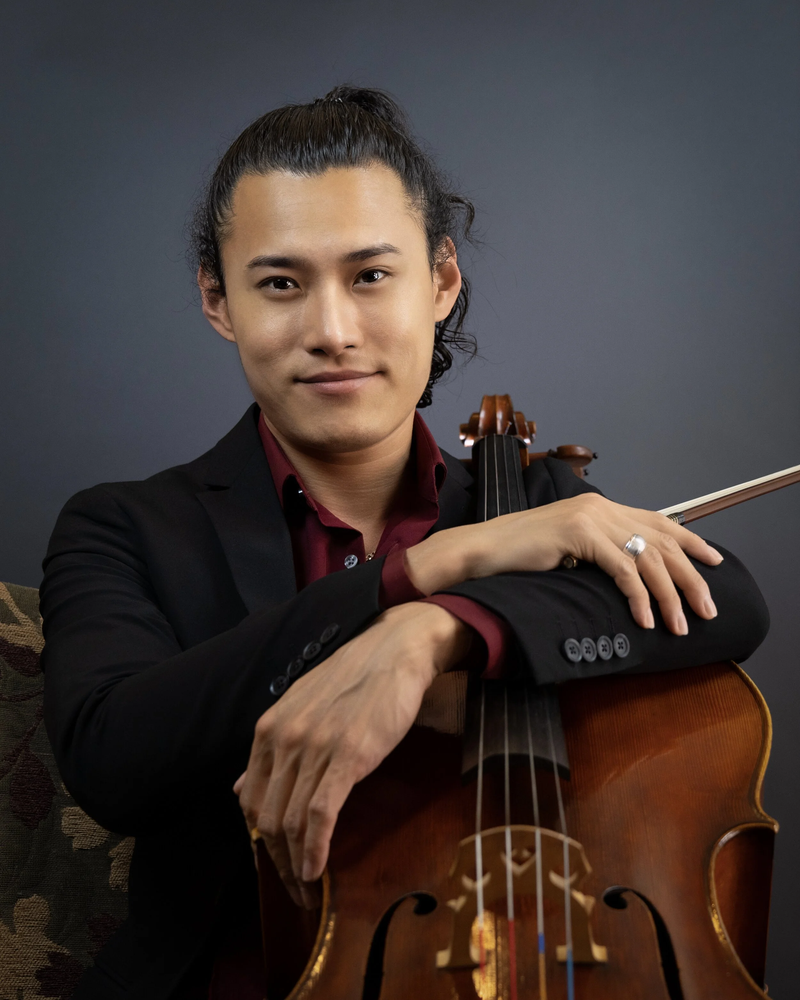
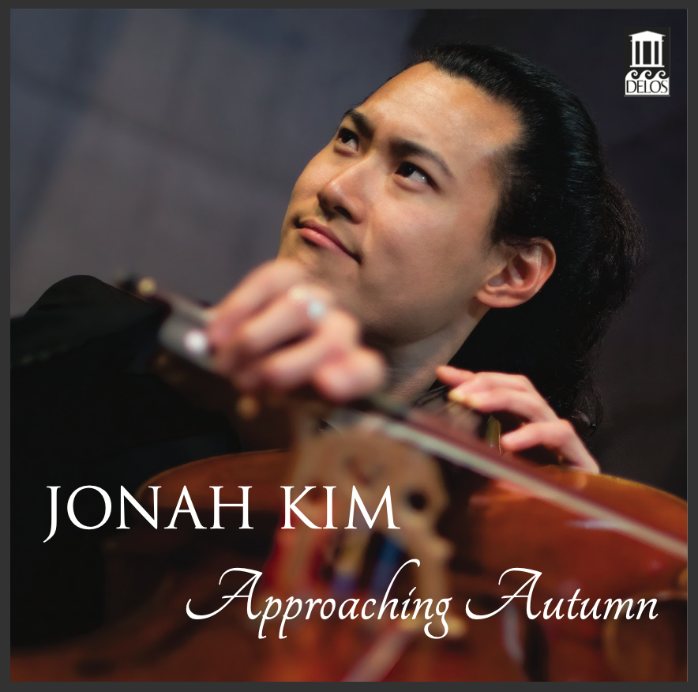

Latest Videos
Subscribe on YouTube
About Jonah
Jonah Kim is an artist of great charisma and originality. His tone is immediately distinguishable by its signature sweetness. His work is praised by critics and fellow musicians alike for his “flawless delivery of Herculean technical demands” (The Strad) and his thorough understanding and insight into the minds of composers. Aside from his cellistic prowess, he is widely regarded as one of the finest musicians in the world today. The Korean International Arts Review called him “Pablo Casals reincarnate”.
From a young age, legendary cellist Janos Starker placed him at the “top of his generation”. At only 12 years of age, Jonah made his solo debut with Wolfgang Sawallisch and the Philadelphia Orchestra, and the Washington Post hailed him as “the next Yo-Yo Ma” at his National Symphony debut. He has since performed on the world’s most prestigious stages.
Jonah’s new album Approaching Autumn, is his second for the Delos label. It is titled after the new American work by Mark Abel, bridging behemoths, the Kodály Solo and the Grieg sonatas. Kim is joined by Robert Koenig on the piano.
In 2020, Jonah founded Trio Barclay with childhood friends Sean Kennard and Dennis Kim, ensemble-in-residence at the Barclay Theatre in Orange County. In 2024, Jonah was named artistic director of the Music Society of San Miguel, and he is founder and director of the San Francisco Music Festival.
Born in Seoul, South Korea, Jonah trained at The Juilliard School and the Curtis Institute of Music. He makes his home in San Francisco with his wife, American ballerina Julia Rowe.
More About Jonah
Approaching Autumn
with Robert Koenig, pianist — Kodály, Abel & Grieg
Order Now Stream Online“…flawless delivery of its Herculean technical demands… the sense of exhilaration in this performance has us on the edge of our seats.” Joanne Talbot, The Strad
“Impactful and dramatic. [Kim’s] tone has the cosy warmth of a well-loved cashmere sweater.” Andrew Farach-Colton, Gramophone
“Kim dives into this music with courage underpinned by formidable technical prowess… Kim and Koenig partner beyond perfection.” Rafael de Acha, All About the Arts

Also Available
Rachmaninoff & Barber: Cello Sonatas
with Sean Kennard, pianist
Cellist Jonah Kim and pianist Sean Kennard have been making music together since they were teenagers at the Curtis Institute of Music. The Rachmaninoff Sonata and the Sonata by Samuel Barber hold a special place for them.
“With his pulsating vibrato and intense expressivity, Kim asserts the cello’s eloquent personality throughout the varied atmospheres.” Donald Rosenberg, GramophoneOrder Now